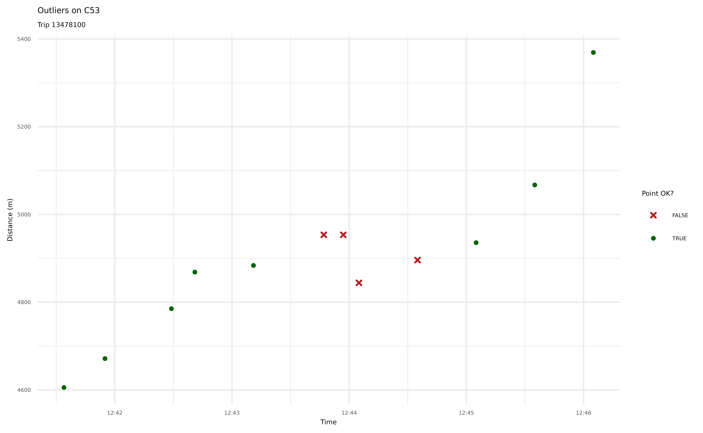
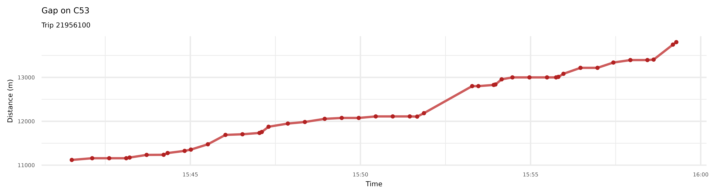
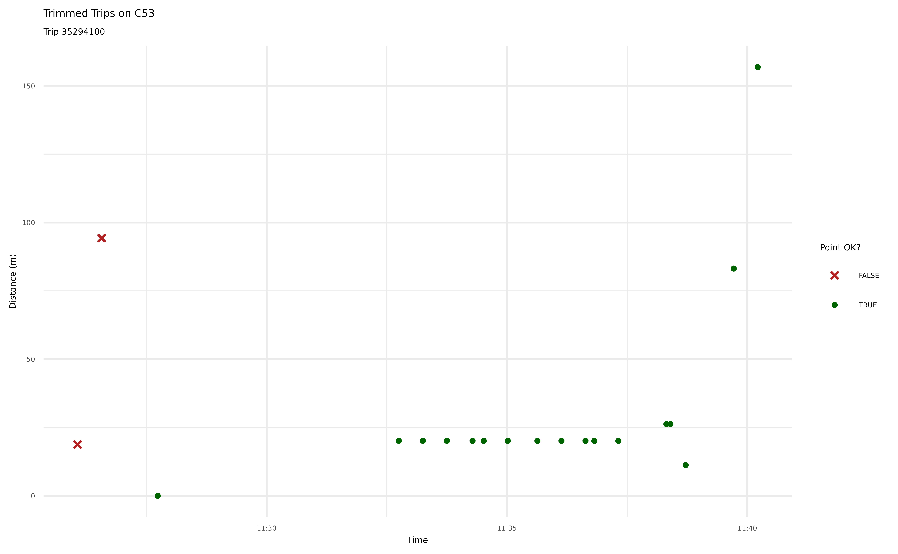
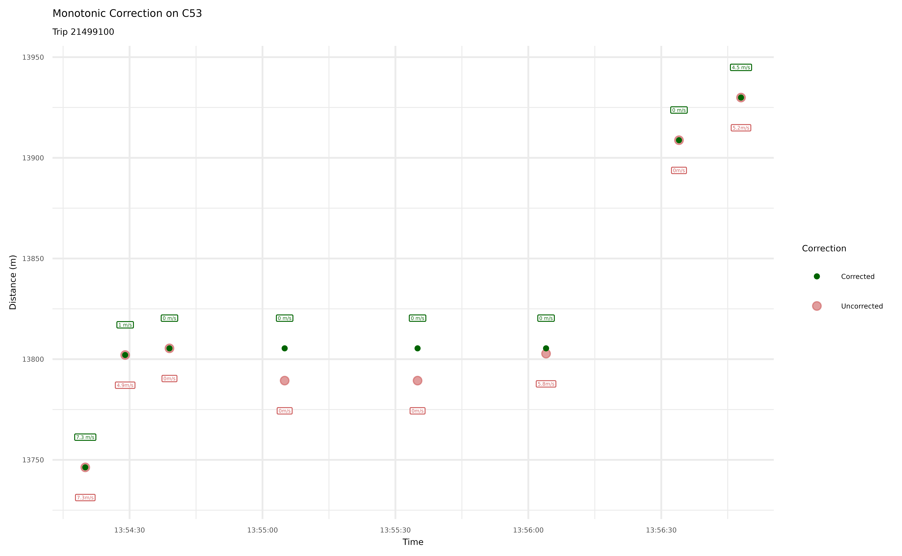

Introduction
In this vignette, we will walk through transittraj’s
entire AVL cleaning and trajectory reconstruction workflow. Check out
vignette("input-data") to learn more about the AVL and GTFS
data we’ll be using.
Let’s begin by loading the libraries we’ll be using:
Step 0: Setup
We’ll begin by setting up the data we’re working with. We’ll be using
wmata_avl and wmata_gtfs for our TIDES AVL and
static GTFS input, respectively.
AVL
For this example, we’ll work with WMATA’s bus route C53 in the northbound direction. Let’s filter our AVL data to these specifications:
c53 <- "C53"
c53_dir <- 0 # 0 is NB, 1 is SB
c53_avl <- wmata_avl %>%
filter((route_id == c53) & (direction_id == c53_dir))Now our dataset should include only northbound C53 trips. We can see below that this window has about 5,400 individual GPS pings across 33 trips over 5 hours.
total_obs <- dim(c53_avl)[1]
num_trips <- length(unique(c53_avl$trip_id_performed))
time_span <- round(max(c53_avl$event_timestamp) - min(c53_avl$event_timestamp),
2)
cat("Total Observations: ", total_obs,
"\nNumber of trips: ", num_trips,
"\nTime span: ", time_span, " hr",
sep = "")
#> Total Observations: 5436
#> Number of trips: 33
#> Time span: 5.02 hrGTFS
Next, we should grab the GTFS shape and feed information we want for
this route and direction. transittraj provides two
functions to help with this:
c53_gtfs <- filter_by_route(gtfs = wmata_gtfs,
route_ids = c53,
dir_id = c53_dir)If we print a summary of this GTFS object, we’ll see that we have only one route:
summary(c53_gtfs)
#> tidygtfs object
#> files agency, routes, stop_times, trips, shapes, calendar, calendar_dates, stops
#> agency WMATA
#> service from 2025-12-14 to 2026-06-13
#> uses stop_times (no frequencies)
#> # routes 1
#> # trips 952
#> # stop_ids 57
#> # stop_names 57
#> # shapes 2Now that we have the filtered GTFS, we must pull the shape we want as a simple features (SF) spatial object. You will need to know two things to do this:
Your
shape_id. As shown above, there are twoshape_ids assigned to the northbound C53. Check outplot_interactive_gtfs()to explore each shape individually and decide which one is correct for you. Below we useshape_id = "C53:04".A coordinate reference system. We recommend projecting all spatial data into an appropriate Euclidian coordinate system. Below we use the UTM zone for Washington, DC, Zone 18N (with an EPSG number of 32618).
Below we use get_shape_geometry() to grab the
shape_id we want, turn it into a linestring, and project it
to an appropriate coordinate system:
c53_NB_shape_id <- "C53:04"
dc_CRS <- 32618
c53_shape <- get_shape_geometry(gtfs = c53_gtfs,
shape = c53_NB_shape_id,
project_crs = dc_CRS)Now, if we print the object, we’ll see that it is one multilinestring
with shape_id = "C53:04" and the coordinate system UTM
18N.
print(c53_shape)
#> Simple feature collection with 1 feature and 1 field
#> Geometry type: MULTILINESTRING
#> Dimension: XY
#> Bounding box: xmin: 322061.8 ymin: 4301418 xmax: 329233.3 ymax: 4310353
#> Projected CRS: WGS 84 / UTM zone 18N
#> # A tibble: 1 × 2
#> shape_id geometry
#> <chr> <MULTILINESTRING [m]>
#> 1 C53:04 ((327507.1 4301484, 327505.6 4301478, 327504.9 4301473, 327504 43014…Visualizing our Starting Data
We now have all the data we need to proceed. But before we do, let’s visualize the AVL point and route geometry so we understand what we’re working with:
# Convert GPS points to spatial objects
c53_sf <- c53_avl %>%
# As SF
st_as_sf(coords = c("longitude", "latitude"),
crs = 4326) %>%
# Project to DC
st_transform(crs = dc_CRS)
# Generate a map
avl_map <- ggplot() +
# Basemap from OSM
ggspatial::annotation_map_tile(type = "cartolight", zoomin = 0,
progress = "none") +
# Add alignment & points
geom_sf(data = c53_shape, color = "red", linewidth = 1.5) +
geom_sf(data= c53_sf, color = "blue",
alpha = 0.2, size = .7) +
# Format our map
theme_void() +
labs(title = "C53 Shape & AVL") +
theme(plot.title = element_text(size = 8))
avl_map
For the most part, our GPS pings follow the route alignment excellently. But what’s the deal with the points off-route in the far south? These pings roughly follow I-295 down to the Blue Plains neighborhood. They end roughly at the location of WMATA’s Shepherd Parkway bus garage. The C53 is dispatched out of Shepherd, and most vehicles take I-295 to get between Shepherd and their starting/ending locations.
Knowing this, these points most likely correspond to one (or more)
deadheading vehicles that were logged into a trip but had not actually
started their run. This is a pretty common phenomenon across AVL
vendors. This demonstrates why you should always 1) visualize your data,
and 2) know the system you’re working with. transittraj
includes functions intended to identify and remove potential deadheads.
We’ll begin exploring these in the following section.
Steps 1 & 2: Buffer & Linearize
Now that we have our data, we can begin cleaning and processesing it. The first two steps we recommend are:
Step 1: Buffer. Clip GPS points to within a certain distance of the route alignment.
Step 2: Linearize. Project GPS points onto the route alignment to retrieve the linear distance from the start of the route.
Both steps are bundled into one function,
get_linear_distances(). There are two main decision
variables in this function:
The projection CRS. This should be the same one you used to create your route shape.
The buffer distance. This will be in the units of your spatial projection. Here we’re using UTM, which is in meters. Thus, all distance measurements you see in the vignette will be in meters.
Running the Code
c53_buffer = 50 # meters
c53_distances <- get_linear_distances(avl_df = c53_avl,
shape_geometry = c53_shape,
project_crs = dc_CRS,
clip_buffer = c53_buffer)Exploring the Results
Now each observation is represented by a distance from the route’s beginning. Let’s first see how many observations were clipped out:
step0_obs <- dim(c53_avl)[1]
step1_obs <- dim(c53_distances)[1]
cat("Initial: ", step0_obs, " obs",
"\nAfter buffer: ", step1_obs, " obs",
"\nDifference: ", (step0_obs - step1_obs), " obs removed")
#> Initial: 5436 obs
#> After buffer: 4946 obs
#> Difference: 490 obs removedWe had just under 500 observations clipped out of our dataset.
We can also take a look at the new header of our dataset:
head(c53_distances)
#> location_ping_id vehicle_id trip_id_performed service_date route_id
#> 1 1 5461 18632100 2026-02-16 C53
#> 2 3 5464 14078100 2026-02-16 C53
#> 3 4 5466 25836100 2026-02-16 C53
#> 4 6 5473 8428100 2026-02-16 C53
#> 6 8 5481 1115100 2026-02-16 C53
#> 7 9 5479 842100 2026-02-16 C53
#> direction_id speed trip_stop_sequence event_timestamp stop_id
#> 1 0 0.0000 63 2026-02-16 10:58:09 7219
#> 2 0 10.9728 52 2026-02-16 10:58:31 6843
#> 3 0 0.0000 2 2026-02-16 10:58:27 13111
#> 4 0 4.5720 63 2026-02-16 10:58:02 7219
#> 6 0 7.9248 41 2026-02-16 10:58:10 28286
#> 7 0 8.8392 29 2026-02-16 10:58:24 4520
#> distance
#> 1 1.534625e+04
#> 2 1.205652e+04
#> 3 4.191312e-02
#> 4 1.535750e+04
#> 6 9.512327e+03
#> 7 6.551790e+03Now, instead of latitude and longitude
columns, we have a single numeric distance column.
Step 3: Cleaning Overlapping Subtrips
Under some AVL vendors, multiple vehicles (or operators) can have
multiple vehicle or operator IDs recorded for the same trip. Sometimes
this is okay: for example, there may be an operator shift change
mid-shift. Other times, however, these multiple vehicles/operators are
logged in at the same time (“overlapping”). This creates problems, as it
becomes impossible for transittraj to understand what the
trip is supposed to be doing.
The function clean_overlapping_subtrips() identifies and
removes these trips. There are a few key decision variables:
Should operator IDs be checked? The WMATA dataset does not include operator information, so we will not check this.
If a subtrip has only one observation assigned to it (i.e., one observation for a unique combination of trip, vehicle, and operator), should it be removed?
Should trips with multiple subtrips that do not overlap be removed? For this dataset, it’s okay to leave these in.
Running the Code
c53_cleaned_subtrips <- clean_overlapping_subtrips(
distance_df = c53_distances,
check_operator = FALSE,
remove_single_observations = TRUE,
remove_non_overlapping = FALSE
)Exploring the Results
step3_obs <- dim(c53_cleaned_subtrips)[1]
cat("Initial: ", step1_obs, " obs",
"\nAfter: ", step3_obs, " obs",
"\nDifference: ", (step1_obs - step3_obs), " obs removed")
#> Initial: 4946 obs
#> After: 4945 obs
#> Difference: 1 obs removedWe can see that only one observation violated our requirements. To
see what that observation is, we’ll introduce a new feature of
transittraj: the return_removals parameter.
Each cleaning function used in this vignette contains a parameter
return_removals that, when set to TRUE, will
return a dataframe of the point(s) removed through that step and a brief
explanation of what it was removed. Let’s check it out:
c53_step3_removals <- clean_overlapping_subtrips(
# Same settigns as before
distance_df = c53_distances, check_operator = FALSE,
remove_single_observations = TRUE, remove_non_overlapping = FALSE,
# Return removals
return_removals = TRUE
)
print(c53_step3_removals)
#> # A tibble: 1 × 7
#> trip_id_performed subtrip n_obs reason action time_range n_subtrips_in_range
#> <chr> <chr> <int> <chr> <chr> <iv<dbl>> <int>
#> 1 8428100 8428100-… 1 singl… remov… [NA, NA) NAWe can see the trip and subtrip
(trip_id-vehicle_id) which was removed, and
that it was removed because it was a single observation. Let’s see what
this trip looked like in the original dataset:
print(c53_distances %>%
filter(trip_id_performed == "8428100"))
#> location_ping_id vehicle_id trip_id_performed service_date route_id
#> 1 6 5473 8428100 2026-02-16 C53
#> direction_id speed trip_stop_sequence event_timestamp stop_id distance
#> 1 0 4.572 63 2026-02-16 10:58:02 7219 15357.5This trip, in fact, only had one observation total. It makes sense to remove this – we can’t do much with a single observation.
Step 4: Clean Outlier/Jumps
GPS data, especially in urban areas, is noisy. Sometimes that noise
manifests as a large instantaneous jump that does not match an
observation’s surroundings. The function clean_jumps()
detects and removes these using median filters. Read more about the
theory behind these filters using help(clean_jumps).
For this example, we’ll do a very simple median filter using only deviation from the median around each point. This has two main decision variables:
The neighborhood width, the total number of points to consider around each observation. We’ll use the default, 7, here. This means each window will consist of 3 points on either side of each observation.
The maximum jump distance. We’ll use a maximum of 20 meters here. This is quite conservative; the goal is simply to demonstrate the idea.
Note that for demonstration purposes, we’re using a very simple
median filter methodology. More options robust options, such as a Hampel
filter, are available through clean_jumps().
Running the Code
Let’s run clean_jumps() as discussed above. The only
input we need to change from its default is the maximum distance
deviation.
c53_max_jump <- 20 # meters
c53_min_jump <- -1 * c53_max_jump # meters
c53_no_jumps <- clean_jumps(distance_df = c53_cleaned_subtrips,
max_median_deviation = c53_max_jump,
min_median_deviation = c53_min_jump,
t_cutoff = Inf)Exploring the Results
Let’s see how many points were removed as outliers from this filter:
step4_obs <- dim(c53_no_jumps)[1]
cat("Initial: ", step3_obs, " obs",
"\nAfter: ", step4_obs, " obs",
"\nDifference: ", (step3_obs - step4_obs), " obs removed")
#> Initial: 4945 obs
#> After: 4934 obs
#> Difference: 11 obs removedWe can use return_removals = TRUE, just like in Step 3,
to see which observations were removed:
c53_step4_removals <- clean_jumps(
# Same settings as before
distance_df = c53_cleaned_subtrips,
neighborhood_width = 7,
max_median_deviation = c53_max_jump, min_median_deviation = c53_min_jump,
evaluate_implosions = FALSE, evaluate_tails = FALSE,
t_cutoff = Inf,
# Return removals
return_removals = TRUE)
print(c53_step4_removals)
#> # A tibble: 11 × 13
#> trip_id_performed event_timestamp distance location_ping_id window_med
#> <chr> <dttm> <dbl> <chr> <dbl>
#> 1 1306100 2026-02-16 12:43:47 4954. 16770 4884.
#> 2 1306100 2026-02-16 12:43:57 4954. 16798 4896.
#> 3 1306100 2026-02-16 12:44:05 4844. 16826 4936.
#> 4 1306100 2026-02-16 12:44:35 4896. 16910 4954.
#> 5 1306100 2026-02-16 13:31:22 13819. 24579 13789.
#> 6 13478100 2026-02-16 15:37:40 108. 45428 66.7
#> 7 35294100 2026-02-16 11:28:14 83.2 4721 20.1
#> 8 35294100 2026-02-16 11:32:14 0.0419 5369 20.1
#> 9 35294100 2026-02-16 11:37:49 0.0419 6260 20.1
#> 10 35294100 2026-02-16 11:39:13 257. 6476 83.2
#> 11 35294100 2026-02-16 11:40:34 11.2 6692 214.
#> # ℹ 8 more variables: window_mad <dbl>, med_dist <dbl>, is_implosion <lgl>,
#> # is_tail <lgl>, ignore_observation <lgl>, mad_ok <lgl>, dev_ok <lgl>,
#> # all_ok <lgl>Let’s explore pings 16770 and 16798 from trip 1306100 as an example. We can plot the trip in this area to visualize the outliers:
# Filter dataframe to our tirp & distances
plot_df <- c53_cleaned_subtrips %>%
filter(trip_id_performed == "1306100") %>%
filter((distance >= 4500) & (distance <= 5500)) %>%
# Join removals
left_join(y = (c53_step4_removals %>% select(location_ping_id, all_ok)),
by = "location_ping_id") %>%
mutate(all_ok = tidyr::replace_na(all_ok, TRUE))
# Create a plot
jumps_plot <- ggplot() +
# Plot the points
geom_point(data = plot_df,
aes(x = event_timestamp, y = distance,
color = all_ok, shape = all_ok),
size = 1, stroke = 1) +
# Format the points
scale_color_manual(name = "Point OK?",
values = c("FALSE" = "firebrick",
"TRUE" = "darkgreen")) +
scale_shape_manual(name = "Point OK?",
values = c("FALSE" = 4,
"TRUE" = 16)) +
# Format the plot
theme_minimal() +
labs(x = "Time",
y = "Distance (m)",
title = "Outliers on C53",
subtitle = "Trip 13478100") +
theme(text = element_text(size = 5))
jumps_plot
This plot makes it pretty clear that some of these points are a bit
out of line. The final one removed may not truly be an outlier; we
recommend playing around with the function’s options to find settings
that make sense for your data. Again, there are a lot of customization
options and types of median filters available through this function.
Read more at help(clean_jumps).
Step 5: Clean Incomplete Trips
AVL or GTFS-rt data is rarely transmitted perfectly. Often, there may
be large gaps of missing data in the middle of trips, or you may have
only a few observations from each trip.
clean_incomplete_trips() is designed to filter out these
scenarios. There are two main groups of decision variables for this
function:
Minimum and maximum trip distances and durations.
Minimum and maximum gaps between adjacent observations.
This function will remove the entirety of trips that violate your decision variables.
Running the Code
For this example, we’ll use a minimum trip distance of 500 meters, and a minimum trip duration of 90 seconds. Anything will less data than this will be filtered out. Additionally, we’ll remove trips with a gap larger than 500 meters.
c53_min_dist <- 500 # meters
c53_min_time <- 90 # seconds
c53_max_gap <- 500 # meters
c53_cleaned_incompletes <- clean_incomplete_trips(
distance_df = c53_no_jumps,
min_trip_distance = c53_min_dist,
min_trip_duration = c53_min_time,
max_distance_gap = c53_max_gap
)Exploring the Results
Now that we’ve filtered our dataset, let’s see how many trips have been removed:
step5_obs <- dim(c53_cleaned_incompletes)[1]
step5_trips <- length(unique(c53_cleaned_incompletes$trip_id_performed))
step4_trips <- length(unique(c53_no_jumps$trip_id_performed))
cat("Initial: ", step4_obs, " obs, ", step4_trips, " trips",
"\nAfter: ", step5_obs, " obs, ", step5_trips, " trips",
"\nDifference: ", (step4_obs - step5_obs), " obs, ",
(step4_trips - step5_trips), " trips removed",
sep = "")
#> Initial: 4934 obs, 31 trips
#> After: 4089 obs, 24 trips
#> Difference: 845 obs, 7 trips removed7 trips violated our requirements, corresponding to roughly 850
individual observations. As before, we can use
return_removals to take a look at the violating trips:
c53_step5_removals <- clean_incomplete_trips(
# Same settings as before
distance_df = c53_no_jumps,
min_trip_distance = c53_min_dist, min_trip_duration = c53_min_time,
max_distance_gap = c53_max_gap,
# Return removals
return_removals = TRUE
)
print(c53_step5_removals)
#> # A tibble: 7 × 16
#> trip_id_performed max_dist min_dist max_time min_time
#> <chr> <dbl> <dbl> <dttm> <dttm>
#> 1 13927100 127. 0 2026-02-16 14:36:57 2026-02-16 14:36:27
#> 2 14639100 15362. 0 2026-02-16 12:38:36 2026-02-16 11:38:49
#> 3 18632100 15360. 15346. 2026-02-16 11:02:20 2026-02-16 10:58:09
#> 4 21956100 13803. 248. 2026-02-16 15:59:17 2026-02-16 14:45:27
#> 5 5516100 15259. 0.0419 2026-02-16 15:12:19 2026-02-16 13:52:44
#> 6 6533100 12118. 0.0419 2026-02-16 15:59:17 2026-02-16 14:52:21
#> 7 7879100 15363. 0.0419 2026-02-16 14:41:08 2026-02-16 13:26:33
#> # ℹ 11 more variables: max_dist_gap <dbl>, max_t_gap <dbl>,
#> # max_dist_gap_id <chr>, max_t_gap_id <chr>, trip_distance <dbl>,
#> # duration <dbl>, dist_ok <lgl>, dur_ok <lgl>, dist_gap_ok <lgl>,
#> # t_gap_ok <lgl>, all_ok <lgl>Most of these were removed because of a large gap in data. Let’s take a look at one, trip 21956100:
# Filter dataframe to our tirp & distances
plot_df <- c53_cleaned_subtrips %>%
filter(trip_id_performed == "21956100") %>%
filter((distance >= 11000) & (distance <= 14000))
# Create a plot
gaps_plot <- ggplot() +
# Plot the points
geom_line(data = plot_df,
aes(x = event_timestamp, y = distance),
linewidth = 0.8, color = "indianred") +
geom_point(data = plot_df,
aes(x = event_timestamp, y = distance),
size = 0.8, color = "firebrick") +
# Format the plot
theme_minimal() +
labs(x = "Time",
y = "Distance (m)",
title = "Gap on C53",
subtitle = "Trip 21956100") +
theme(text = element_text(size = 5))
gaps_plot
We can see this trip’s large gap around 12,500 meters. The slope of this line is a bit steep, but is not unreasonable; it seems a few GTFS-rt pings just went missing here somehow. When we go to reconstruct a trajectory curve later, it may not be reasonable to interpolate between these points over such a large gap, so we’ll leave this trip out of our future analyses.
Step 6: Trim Trip Tails
Earlier in this vignette, we used a spatial buffer to clean what
appeared to be deadheads. But what if a trip deadheads close to – or
along – the route alignment? The function trim_trips() is
designed to handle these scenarios by trimming the tails off of
trips.
The function identifies the observations with the minimum and maximum distance values, and removes any observations which occur before/after these points. There is one main decision variable here: should beginning trail be trimmed, ending tails, or both?
Running the Code
For this example, we’ll trim both ends of trips:
c53_trimmed <- trim_trips(distance_df = c53_cleaned_incompletes,
trim_type = "both")Exploring the Results
Let’s see what was removed:
step6_obs <- dim(c53_trimmed)[1]
cat("Initial: ", step5_obs, " obs",
"\nAfter: ", step6_obs, " obs",
"\nDifference: ", (step5_obs - step6_obs), " obs removed")
#> Initial: 4089 obs
#> After: 4086 obs
#> Difference: 3 obs removedFor this dataset, it looks like there were no long deadheads along the route alignment. Whether this function will make a difference will largely depend on the dataset and routes you’re working with. Let’s take a look at a the points removed:
c53_step6_removals <- trim_trips(
# Same settings as before
distance_df = c53_cleaned_incompletes, trim_type = "both",
# Return removals
return_removals = TRUE
)
print(c53_step6_removals)
#> # A tibble: 3 × 10
#> trip_id_performed event_timestamp distance min_dist_index max_dist_index
#> <chr> <dttm> <dbl> <int> <int>
#> 1 13478100 2026-02-16 15:59:11 2447. 1 88
#> 2 35294100 2026-02-16 11:26:04 18.8 3 202
#> 3 35294100 2026-02-16 11:26:34 94.3 3 202
#> # ℹ 5 more variables: row_index <int>, before_min <lgl>, after_max <lgl>,
#> # obs_ok <lgl>, location_ping_id <chr>Plotting the points removed along trip 35294100:
# Filter dataframe to our tirp & distances
plot_df <- c53_cleaned_incompletes %>%
filter(trip_id_performed == "35294100") %>%
filter(distance <= 200) %>%
# Join removals
left_join(y = (c53_step6_removals %>% select(location_ping_id, obs_ok)),
by = "location_ping_id") %>%
mutate(obs_ok = tidyr::replace_na(obs_ok, TRUE))
# Create a plot
trimmed_plot <- ggplot() +
# Plot the points
geom_point(data = plot_df,
aes(x = event_timestamp, y = distance,
color = obs_ok, shape = obs_ok),
size = 1, stroke = 1) +
# Format the points
scale_color_manual(name = "Point OK?",
values = c("FALSE" = "firebrick",
"TRUE" = "darkgreen")) +
scale_shape_manual(name = "Point OK?",
values = c("FALSE" = 4,
"TRUE" = 16)) +
# Format the plot
theme_minimal() +
labs(x = "Time",
y = "Distance (m)",
title = "Trimmed Trips on C53",
subtitle = "Trip 35294100") +
theme(text = element_text(size = 5))
trimmed_plot
As noted before, this does not seem to be a long deadhead; just some
noise at the beginning of the route (by default,
clean_jumps() does not look for jumps at the beginning/end
of trips before a complete median window can be formed). Whether this
step is truly necessary will depend on your dataset.
Step 7: Correct for Monotonicity
While GPS noise can result in the large jumps we saw previously, it much more often causes small deviations in observed locations. This creates problems when fitting an interpolating trajectory curve, because if any points drift backwards, the curve will be neither monotonic nor invertible. The seventh (and final!) cleaning step is to “pull” backtracking points back upwards. Optionally, data can also be made strictly monotonic.
The function make_monotonic() has two decision
variables:
Should speeds be corrected to satisfy monotonicity? AVL speed location can help fit an excellent interpolating curve, but the values of observed speeds must meet certain coditions (known as Fritsch-Carlson constraints) to produce a monotonic spline. If your AVL data has speeds information, and you plan to use it when fitting a spline (the recommend interpolation method), set
correct_speed = TRUEto guarantee the fit is monotonic.Should the trajectory be made strictly monotonic? This will identify perfectly flat regions can give them a slight upward slope. To be invertible, a trajectory must be strictly increasing, and never constant.
More information is available at
help(make_monotonic).
Running the Code
Our AVL dataset does have speeds, and we do want an invertible and monotonic final trajectory. As such, we’ll correct the speeds to meet the Fritsch-Carlson constraints, and we will add a distance error of 0.001 meters (or 1 mm).
c53_dist_error = 0.001
c53_mono <- make_monotonic(distance_df = c53_trimmed,
correct_speed = TRUE,
add_distance_error = c53_dist_error)Exploring the Results
This function modifies existing data, but does not remove any points. The total number of observations should stay the same:
step7_obs <- dim(c53_mono)[1]
cat("Initial: ", step6_obs, " obs",
"\nAfter: ", step7_obs, " obs",
"\nDifference: ", (step6_obs - step7_obs), " obs removed")
#> Initial: 4086 obs
#> After: 4086 obs
#> Difference: 0 obs removedWe can check, though, if our dataset is now monotonic using
validate_monotonicity(). We’ll ask the function to validate
speeds as well:
# Trimmed DF
step6_val <- validate_monotonicity(distance_df = c53_trimmed,
check_speed = TRUE)
print(step6_val)
#> weak strict speed
#> FALSE FALSE FALSE
# Monotonic-corrected DF
step7_val <- validate_monotonicity(distance_df = c53_mono,
check_speed = TRUE)
print(step7_val)
#> weak strict speed
#> TRUE TRUE TRUEWe can see the trimmed dataset did not satisfy weak, strict, or Fristch-Carlson speed conditions for monotonicity, but the corrected dataset did. Let’s visualize how these corrections affected our data by plotting an example trip:
# Set filter parameters
#plot_trip <- "1306100"
plot_trip <- "21499100"
#plot_dists <- c(13500, 14000)
plot_dists <- c(13700, 13950)
# Get old DF
plot_df_before <- c53_trimmed %>%
filter(trip_id_performed == plot_trip) %>%
filter((distance >= plot_dists[1]) & (distance <= plot_dists[2])) %>%
mutate(speed_label = paste(round(speed, 1), "m/s", sep = ""))
# Get corrected DF
plot_df_after <- c53_mono %>%
filter(trip_id_performed == plot_trip) %>%
filter((distance >= plot_dists[1]) & (distance <= plot_dists[2])) %>%
mutate(speed_label = paste(round(speed, 1), " m/s", sep = ""))
# Plot
mono_plot <- ggplot() +
geom_point(data = plot_df_before,
aes(x = event_timestamp, y = distance,
color = "Uncorrected"),
size = 2, alpha = 0.6) +
geom_point(data = plot_df_after,
aes(x = event_timestamp, y = distance,
color = "Corrected"),
size = 1, alpha = 1) +
geom_label(data = plot_df_before,
aes(x = event_timestamp, y = distance,
color = "Uncorrected", label = speed_label),
nudge_y = -15, size = 1, show.legend = FALSE) +
geom_label(data = plot_df_after,
aes(x = event_timestamp, y = distance,
color = "Corrected", label = speed_label),
nudge_y = 15, size = 1, show.legend = FALSE) +
scale_color_manual(name = "Correction",
values= c("Uncorrected" = "indianred",
"Corrected" = "darkgreen")) +
# Format the plot
theme_minimal() +
labs(x = "Time",
y = "Distance (m)",
title = "Monotonic Correction on C53",
subtitle = paste("Trip ", plot_trip, sep = "")) +
theme(text = element_text(size = 5))
mono_plot
In this trip, the GPS pings backtrack slightly while the bus is
supposed to be stopped. The speeds are also larger than is physically
feasible for a monotonic trajectory as the bus enters and leaves this
stop. make_monotonic() identified and corrected both
issues.